我们现将问题简化下，如果有一个3*3的矩阵A，已知其列空间存在线性相关，去掉后只剩下两个向量，那么列空间大小为2维，列秩为2，那么行秩等于多少？
设矩阵A为：

那么存在一组(x,y)使：

所以矩阵A化成：
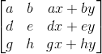
接下来看行空间，抽出前两列出来分析，假定前两列可以由(w,v)形成线性相关方程（即第一行前两个值与第二行前两个值与第三行前两个值构成线性相关），并组成以下方程组：
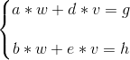
那这个方程组有没有解？已知两条直线的解就是直线的交点，分别求出两条直线的斜率为：
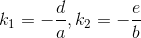
如果斜率相同，那么可能无解或有无数解。假定斜率相等，这时有两种情况，一种是双方斜率都不存在（垂直于x轴），如果斜率不存在那么有a=b=0，原矩阵可以表示成以下形式：
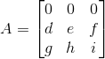
因为前两列向量已知不存在线性相关，所以
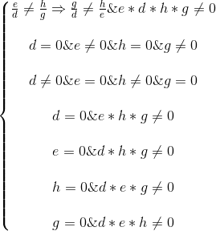
所以可得第二行第三行向量线性无关，其行空间为2维平面，行秩=列秩=2.
再来看另一种情况，双方斜率存在且相同：
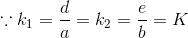
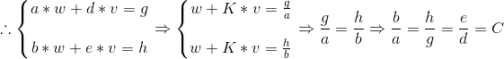
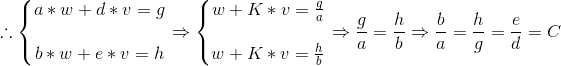
这时前两列向量被线性相关了，明显与假设矛盾，所以不存在两条直线斜率相同的情况，所以两条直线的斜率肯定不同，其必有交点，交点就是(w,v)。
回过头来看矩阵A，其可化成
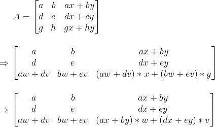
易得第一行向量与第二行向量与第三行向量线性相关，所以去掉第三行向量，其行空间为2维平面，行秩=列秩=2。
3维矩阵解决完后，那4维，5维，6维……该如何证明？各种专业证明网上教材有的是，我们这只是想直观地了解下为什么，那我用一种直观的方法来解答。
对于一个m*n的矩阵，如果其列秩为k，行秩为q，矩阵A如下：
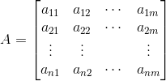
照刚刚3*3矩阵的操作，首先把前k列变成线性无关向量，再把前q行变成线性无关向量（通过换向量位置，这里不会改变行秩或列秩，因为行秩列秩都是线性无关的向量总数，跟位置无关。比如换了列的位置，对列秩无影响，对行秩同样无影响，因为上下两行一一对应的数字没变化，这里通过想象下就能理解，就不画图解释了），这时矩阵变成以下形式：
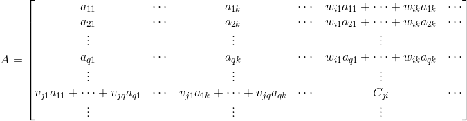
从图中可以易得矩阵从第k列后都可以化成前k列线性组合的结果，从第q行后都可以化成前q行线性组合的结果（线性相关的定义），在这里我们假定的第i列可以通过一组wi参数组合，第j行可以通过一组vj参数组合，这时可以得到：
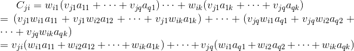
通过上式可以推测对于从q行后的第j行向量，只要前k列的值能够找到一组线性组合vj，那么从第k列后的所有值都能满足之前的线性组合vj。也可以这么说，从第k列后的所有值对线性组合vj不造成任何影响。这时问题被简化成一个n*k的矩阵，其行秩与之前n*m的矩阵行秩一致都等于q。
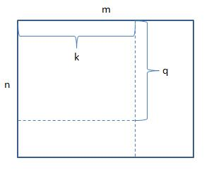
这时分析下q的大小，如果q>k，明显有问题，因为对于行向量来说，本身只有k维的数，但是却有大于k个的总量，相当于本身是2维向量却有3个向量，明显线性相关了，所以q<=k.
接下来问题就简单了，我们可以把矩阵A转置下（转置就是行列交换）
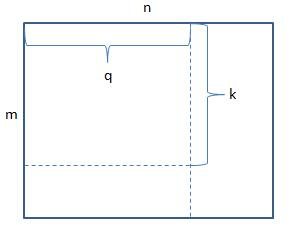
跟转置前一样的推导，得到k<=q，这时答案就出现了q=k。
说了那么多，如果疏漏或错误或什么不理解的地方，可以QQ或邮箱【1520498543】（记得备注下额~~）